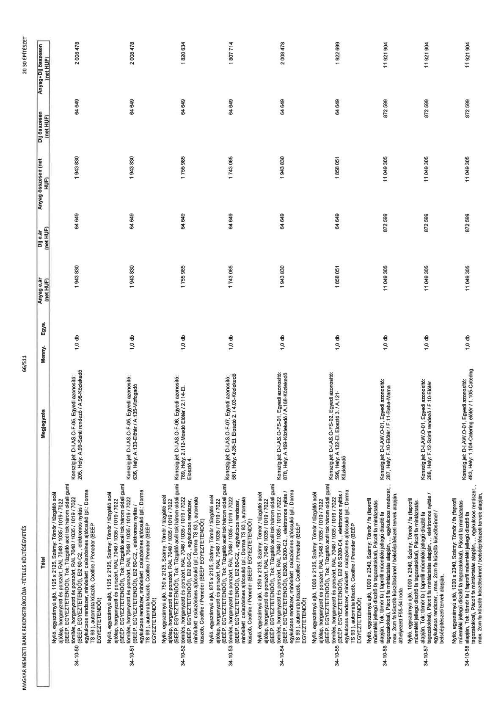

| Tétel | Megjegyzés | Menny. | Egys. | Anyag e.ár (net HUF) | Díj e.ár (net HUF) | Anyag összesen (net HUF) | Díj összesen (net HUF) | Anyag+Díj összesen (net HUF) |
|---|---|---|---|---|---|---|---|---|
| 34-10-50 Nyíló, egyszárnyú ajtó, 1125 x 2125, Szárny: Tömör / tűzgátló acél ajtólap, horganyzott és porszórt, RAL 7048 / 1035 / 1019 / 7022 (BÉÉP. EGYEZTETENDŐ!), Tok: Tűzgátló acél tok három oldali gumi tömítés, horganyzott és porszórt, RAL 7048 / 1035 / 1019 / 7022 (BÉÉP. EGYEZTETENDŐ!), EI2 60-C2,, elektromos nyitás / egykulcsos rendszer, minősített csúszósínes ajtócsukó (pl.: Dorma TS 93), automata küszöb, Coolfire / Peneder (BÉÉP. EGYEZTETENDŐ!) | Konszign.jel: D-I.AS.O-F-05. Egyedi azonosító: 205, Hely: A.99-Szinti rendező / A.98-Közlekedő | 1,0 | db | 1 943 830 | 64 649 | 1 943 830 | 64 649 | 2 008 478 |
| 34-10-51 Nyíló, egyszárnyú ajtó, 1125 x 2125, Szárny: Tömör / tűzgátló acél ajtólap, horganyzott és porszórt, RAL 7048 / 1035 / 1019 / 7022 (BÉÉP. EGYEZTETENDŐ!), Tok: Tűzgátló acél tok három oldali gumi tömítés, horganyzott és porszórt, RAL 7048 / 1035 / 1019 / 7022 (BÉÉP. EGYEZTETENDŐ!), EI2 60-C2,, elektromos nyitás / egykulcsos rendszer, minősített csúszósínes ajtócsukó (pl.: Dorma TS 93), automata küszöb, Coolfire / Peneder (BÉÉP. EGYEZTETENDŐ!) | Konszign.jel: D-I.AS.O-F-05. Egyedi azonosító: 636, Hely: A.133-Előtér / A.135-Vízfogadó | 1,0 | db | 1 943 830 | 64 649 | 1 943 830 | 64 649 | 2 008 478 |
| 34-10-52 Nyíló, egyszárnyú ajtó, 750 x 2125, Szárny: Tömör / tűzgátló acél ajtólap, horganyzott és porszórt, RAL 7048 / 1035 / 1019 / 7022 (BÉÉP. EGYEZTETENDŐ!), Tok: Tűzgátló acél tok három oldali gumi tömítés, horganyzott és porszórt, RAL 7048 / 1035 / 1019 / 7022 (BÉÉP. EGYEZTETENDŐ!), EI2 60-C2,, egykulcsos rendszer, minősített csúszósínes ajtócsukó (pl.: Dorma TS 93), automata küszöb, Coolfire / Peneder (BÉÉP. EGYEZTETENDŐ!) | Konszign.jel: D-I.AS.O-F-06. Egyedi azonosító: 769, Hely: 2.112-Mosdó Előtér / 2.114-EI. Elosztó 4. | 1,0 | db | 1 755 985 | 64 649 | 1 755 985 | 64 649 | 1 820 634 |
| 34-10-53 Nyíló, egyszárnyú ajtó, 875 x 2125, Szárny: Tömör / tűzgátló acél ajtólap, horganyzott és porszórt, RAL 7048 / 1035 / 1019 / 7022 (BÉÉP. EGYEZTETENDŐ!), Tok: Tűzgátló acél tok három oldali gumi tömítés, horganyzott és porszórt, RAL 7048 / 1035 / 1019 / 7022 (BÉÉP. EGYEZTETENDŐ!), EI2 60-C2,, egykulcsos rendszer, minősített csúszósínes ajtócsukó (pl.: Dorma TS 93), automata küszöb, Coolfire / Peneder (BÉÉP. EGYEZTETENDŐ!) | Konszign.jel: D-I.AS.O-F-07. Egyedi azonosító: 581, Hely: 4.35-EI. Elosztó 2. / 4.03-Közlekedő | 1,0 | db | 1 743 065 | 64 649 | 1 743 065 | 64 649 | 1 807 714 |
| 34-10-54 Nyíló, egyszárnyú ajtó, 1250 x 2125, Szárny: Tömör / tűzgátló acél ajtólap, horganyzott és porszórt, RAL 7048 / 1035 / 1019 / 7022 (BÉÉP. EGYEZTETENDŐ!), Tok: Tűzgátló acél tok három oldali gumi tömítés, horganyzott és porszórt, RAL 7048 / 1035 / 1019 / 7022 (BÉÉP. EGYEZTETENDŐ!), EI260, S200-C2,, elektromos nyitás / egykulcsos rendszer, minősített csúszósínes ajtócsukó (pl.: Dorma TS 93), automata küszöb, Coolfire / Peneder (BÉÉP. EGYEZTETENDŐ!) | Konszign.jel: D-I.AS.O-F-01. Egyedi azonosító: 878, Hely: A.169-Közlekedő / A.168-Közlekedő | 1,0 | db | 1 943 830 | 64 649 | 1 943 830 | 64 649 | 2 008 478 |
| 34-10-55 Nyíló, egyszárnyú ajtó, 1000 x 2125, Szárny: Tömör / tűzgátló acél ajtólap, horganyzott és porszórt, RAL 7048 / 1035 / 1019 / 7022 (BÉÉP. EGYEZTETENDŐ!), Tok: Tűzgátló acél tok három oldali gumi tömítés, horganyzott és porszórt, RAL 7048 / 1035 / 1019 / 7022 (BÉÉP. EGYEZTETENDŐ!), EI 60 S200-C4,, elektromos nyitás / egykulcsos rendszer, minősített csúszósínes ajtócsukó (pl.: Dorma TS 93), automata küszöb, Coolfire / Peneder (BÉÉP. EGYEZTETENDŐ!) | Konszign.jel: D-I.AS.O-F-02. Egyedi azonosító: 596, Hely: A.122-EI. Elosztó 3. / A.121- Közlekedő | 1,0 | db | 1 858 051 | 64 649 | 1 858 051 | 64 649 | 1 922 699 |
| 34-10-56 Nyíló, egyszárnyú ajtó, 1000 x 2340, Szárny: Tömör / fa (faprofil műemléki jellegű díszítő fa tagozatokkal), Pácolt fa mintáztatás alapján, Tok: tömör fa (faprofil műemléki jellegű díszítő fa tagozatokkal), Pácolt fa mintáztatás alapján, , , egykulcsos rendszer,, max. 2cm fa küszöb küszöbsínnel / belsőépítészeti tervek alapján, áthelyezett F55-54 iroda | Konszign.jel: D-I.AW.O-01. Egyedi azonosító: 287, Hely: F.10-Előtér / F.11-Baba-Mama | 1,0 | db | 11 049 305 | 872 599 | 11 049 305 | 872 599 | 11 921 904 |
| 34-10-57 Nyíló, egyszárnyú ajtó, 1000 x 2340, Szárny: Tömör / fa (faprofil műemléki jellegű díszítő fa tagozatokkal), Pácolt fa mintáztatás alapján, Tok: tömör fa (faprofil műemléki jellegű díszítő fa tagozatokkal), Pácolt fa mintáztatás alapján, , , elektromos nyitás / egykulcsos rendszer,, max. 2cm fa küszöb küszöbsínnel / belsőépítészeti tervek alapján, | Konszign.jel: D-I.AW.O-01. Egyedi azonosító: 288, Hely: F.12-Szinti rendező / F.10-Előtér | 1,0 | db | 11 049 305 | 872 599 | 11 049 305 | 872 599 | 11 921 904 |
| 34-10-58 Nyíló, egyszárnyú ajtó, 1000 x 2340, Szárny: Tömör / fa (faprofil műemléki jellegű díszítő fa tagozatokkal), Pácolt fa mintáztatás alapján, Tok: tömör fa (faprofil műemléki jellegű díszítő fa tagozatokkal), Pácolt fa mintáztatás alapján, , , egykulcsos rendszer,, max. 2cm fa küszöb küszöbsínnel / belsőépítészeti tervek alapján, | Konszign.jel: D-I.AW.O-01. Egyedi azonosító: 483, Hely: 1.104-Catering előtér / 1.105-Catering | 1,0 | db | 11 049 305 | 872 599 | 11 049 305 | 872 599 | 11 921 904 |
